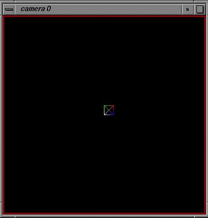
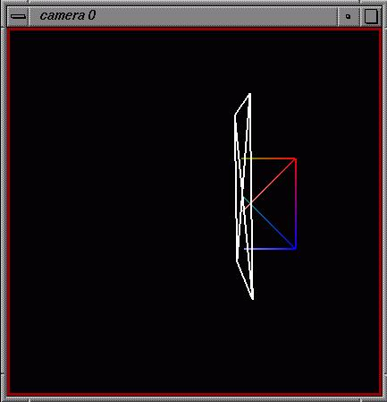

Let's first import the viewer module from the DejaVu application
>>> from DejaVu import ViewerAll right, so let's instantiate our first viewer:
>>> MyViewer = Viewer()This command creates a viewer with a first camera (3D window) that was created with double buffering and a z-buffer by default. A viewer can have several cameras allowing the user to look at the scene from several view points.
>>> v1 = MyViewerAfter issuing this command you should have the following windows on your screen:
Now let's display a bunch of lines. To do this we need 3D coordinates:
>>> coords = [ [0.,0.,0.], [1.,1.,0.], [0.,1.,0.], [1.,0.,0.] ]an array of indices telling which vertices are to be connected by lines:
>>> indices = [[0,1], [2,3],[0,2],[2,1],[1,3],[3,0]]
Alternatively, the lines could be specified where each list represents a line through the points whose indices are given. The value -1 terminates the line. The first two entries draw the diagonals and the third the box itself:
>>> indices = [[0,1, -1, 0,0], [2,3,-1,0,0], [0,2,1,3,0]]and an optional array of materials. Here the tuples represent RGB values:
>>> materials = ( (1.,1.,1.,1.), (1.,0.,0.,1.), (0.,1.,0.,1.), (0.,0.,1.,1.) )We create a geometry object of type IndexedPolylines:
>>> from DejaVu import IndexedPolylines
>>> cross = IndexedPolylines.IndexedPolylines('MyFirstObject')
We add the vertices, lines and materials to that object:
>>> cross.Set(vertices=coords, faces=indices, materials = materials )and we add the geometry to the viewer:
>>> MyViewer.AddObject(cross)to see the object, we need to redraw the scene:
>>> MyViewer.Redraw()
Now the object listbox should have one more line "~MyFirstObject". The ~ is used to visualize the hierarchy. By default, AddObject makes the new object the child of root. This can be changed programmatically (see Reference Manual). In the camera you should see a square with four vertices colored white, red, green and blue. You can use the mouse to transform this object:
| Middle-button | rotation |
| Right-button | XY-translation |
| Shift + Middle-button | scale |
| Shift + Right-button | Z-translation |
Because of the perspective, the Z-translation looks like a scaling operation, but it is not. You can tell the difference by doing a Z-translation away from you. You will see the object fade in the fog ...!
Now try to hit the Reset button in the GUI. The object should return to its initial position. What you do here is to reset the current object's transformation matrix.(See Reference Manual for more details.)
If you hit the Normalize button, the square will be scaled to fill out the camera. What happens here is that the bounding box of the scene is computed and then the root object is transformed to fit the bounding box into the camera.
Notice that when you rotate, the square rotates about its lower left
corner (the white vertex). Try hitting the Center button
and do a rotation. The object now rotates about its center. What happens
here is that the center of the scene's bounding box is computed
and this point is set as the current object's rotation center. You can
set
the rotation center of the current object by picking on any vertex
in the scene while holding down the Shift key.
| Shift + Left-button | set rotation center to picked vertex |
Up to now the current object was always the "root". Therefore, all transformations were applied to "root" and the square moved because it is a child of root and thus inherits its transformations.
You can change the current object either by selecting its name in the
object list or by picking its graphical representation with the mouse in
the camera. Picking in the camera not on an object makes the root the current
object. (Also, an object can be made the current object programmatically
which is described in the Reference Manual.)
| Left-button | selection picking |
The Properties Panel appears below the Reset, Norm. and Center buttons. This part of the GUI allows the user to interactively change the properties of the current object, camera, any Clipping planes and any of the lights present. Selecting Object, Camera, Clip or Light button causes the appropriate submenu to be displayed at the bottom of the GUI.
By default, the Object submenu is displayed. The Object submenu has 3 checkbuttons: Show Object lets you display or hide the current object,( it has no effect if the current object is root) and the Edit Object Material button lets you change the color, value and surface properties of the current object.
Set the current object to "~MyFirstObject" and toggle the Show Object checkbutton. The box should appear and disappear in the Camera 0.
Click on the Edit Object Material checkbutton. Controls are displayed
which allow you to change the color, value and other properties of the
materials used to display the current object, "~MyFirstObject."
(Example Two below shows you more about changing the materials of the current
object.)
Click on this button again to close this portion of the GUI.
(It is not possible to change the properties of the root's materials)
Next is the Delete Object button. If you press this button, the current object will be deleted and removed from the viewer. Try it. The box should disappear from Camera 0. To restore it, you must again add it to your viewer.
>>> MyViewer.AddObject(cross)
to see the object, we need to redraw the scene:
>>> MyViewer.Redraw()
The LineWidth and PointWidth Sliders allow you to change these properties
of the current object if it is possible.
Make "~MyFirstObject" the current object and try dragging the small
blue triangle above the slider. You should see the line widths change in
Camera 0.
The last four buttons allow you to make choices about how the Front and Back views of the current object are displayed, what kind of shading is used and what kind of culling is done on it. These are illustrated with the third example below.
Up to now we have transformed geometries, but you can also transform
the camera position or the clipping planes.
Let's first name a clipping plane:
NOTE:You must make ~MyFirstObject the current object by selecting
it in the ViewerGUI or by clicking and you should increase the size of
"cross" with Shift-Middle Mouse Button before starting this section.
>>> cl = MyViewer.clipP[0]This a handle to the first clipping plane. By default this plane has equation x=0. The number of clipping planes available depends on your hardware. The OpenGL specifications speak about 6 or more such planes. When a viewer gets instantiated, it finds out how many such planes your OpenGL implementation provides and creates an array of clipping planes for the viewer (MyViewer.clipP).
Now we can add this clipping plane to our object, meaning this object will be clipped by the plane . MAKE cross the current object for the next section, either by selecting in the ViewerGUI or by clicking on it in the camera. (HINT: you may want to increase the size of "cross" with Shift-Middle Mouse Button before starting this section)
>>> cross.AddClipPlane(cl)To activate and display this plane, select the Clip button in the Properties Panel. This will show the Clip Properties submenu. Click on row 1 button under on heading. This makes this clipping plane interact with the current object, cross. To display the clipping plane, click on row 1 button under the disp. (display) heading. Notice that as you translate the square, it gets clipped when it moves into the left half of the camera. If you toggle the button in row 1 under the side heading, this will change. You can add other clipping planes using this submenu. First, be sure that ~MyFirstObject is the current object. Then clipping planes are made to slice it by turning on the buttons in the first column. The side buttons toggle which part of the clipped object is displayed.
#Make the clipping plane visible >>> cl.Set(visible=1)# translate it to the right

When you bind clipping planes to an object, you can specify whether or not it should clip this object's children using the inh buttons.
We can now transform the clipping plane either by picking on
it (left mouse button) or by selection (Transform Clip) in the GUI.
As you rotate the plane you will see that is is actually a square with
diagonals. Translations are always done perpendicular to the clipping plane.
Scale only changes the geometry representing the clipping plane which is
infinite . Of course, the plane can be made invisible by toggling
the disp button. The reset button in the GUI will reset the clipping plane's
transformation if the Clip button under Transform is on.
Note that when you move the "root" object or the "~MyFirstObject"
object, the clipping plane doesn't move. this is because it doesn't inherit
transformations. If you want to look at how it clips your geometry from
somewhere else you'll have to transform the camera's position. You
can do this either by double clicking (left mouse button) on the camera's
background or by selecting "Transform Camera" in the GUI.
| Double Left-button | transform camera |